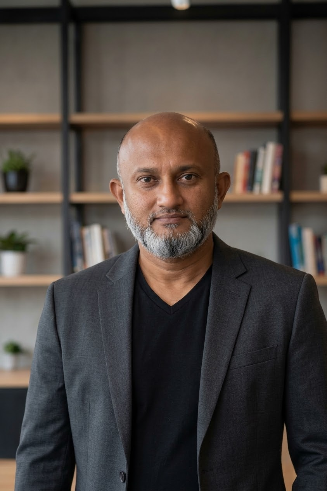
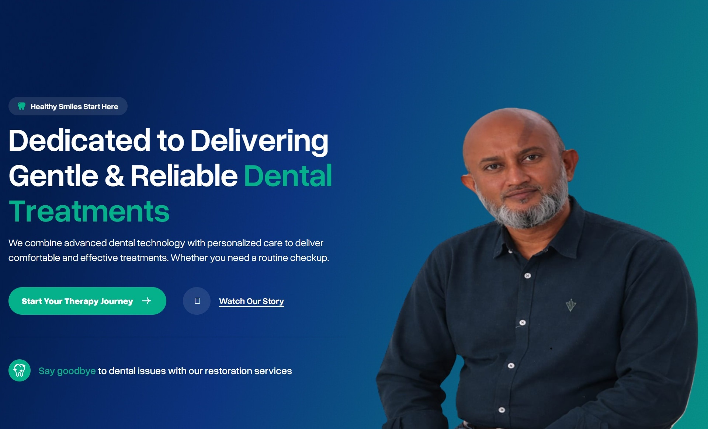
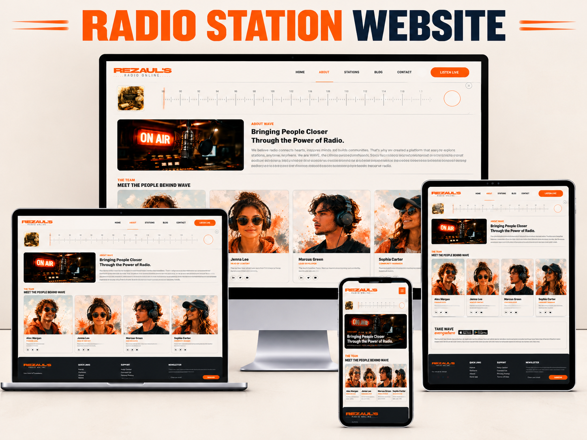
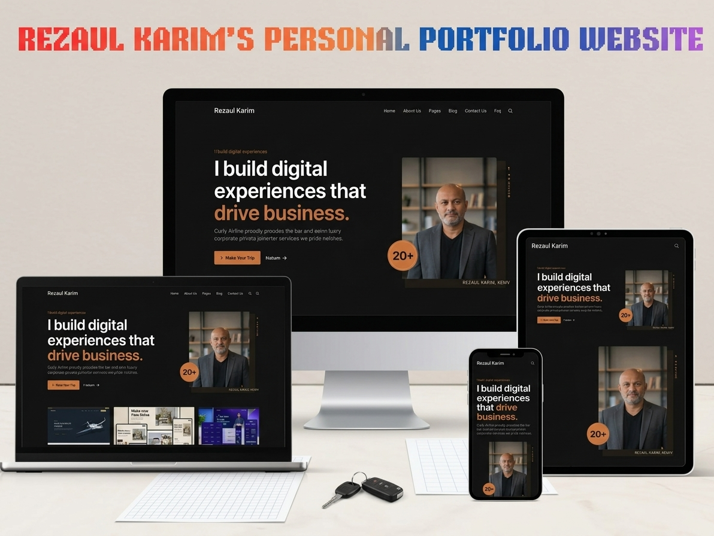
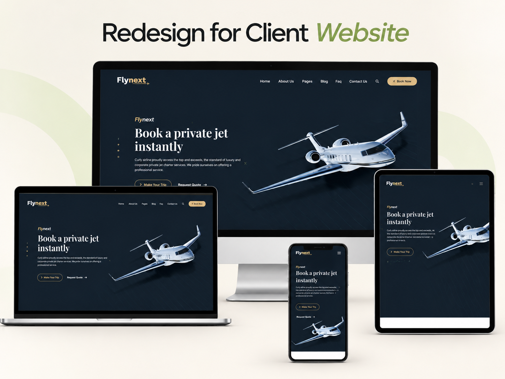
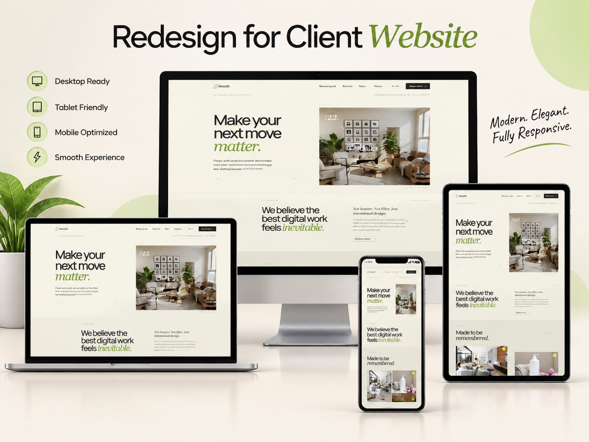
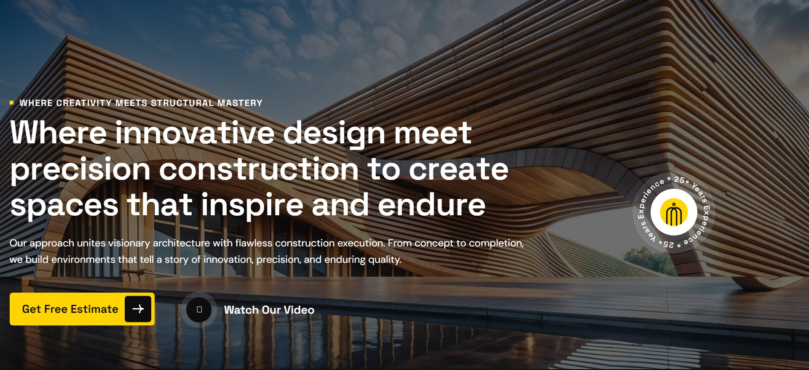
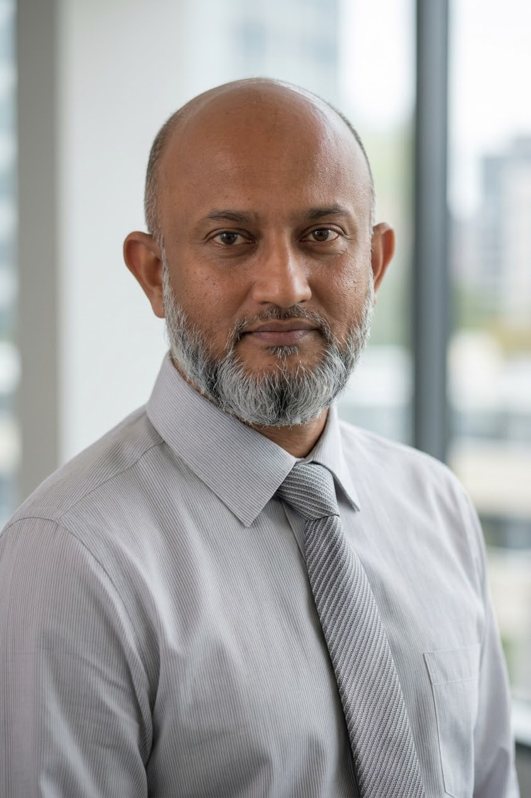
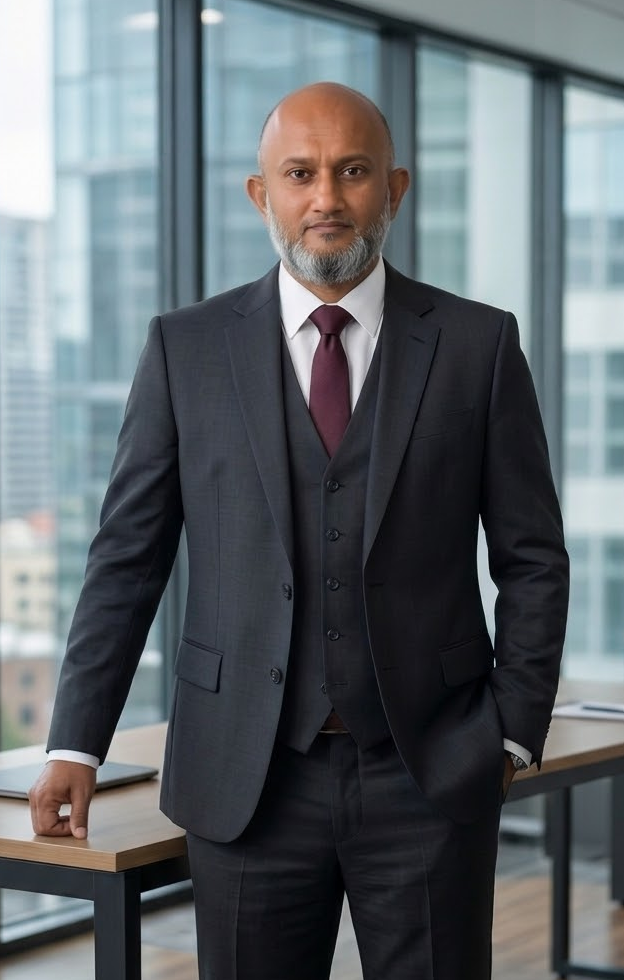
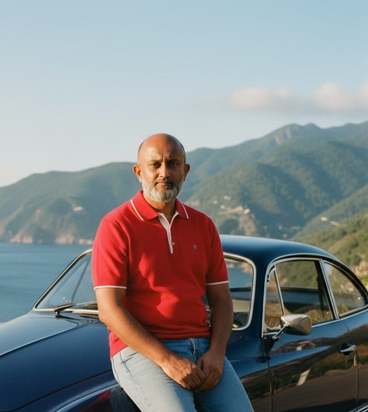

01
Front-End
Development
Responsive interfaces with a strong focus on usability, consistency and clean implementation.
HELLO, I'M REZAUL KARIM
Full-Stack Web Developer & Designer crafting responsive, high-performing websites and custom web solutions with thoughtful design and clean code.

Good websites don't just look impressive.
They make the next step feel effortless.
A little about the person behind the pixels.
A PRACTICAL, DETAIL-DRIVEN APPROACH
I'm Rezaul Karim, a Full-Stack Web Developer & Designer with a strong analytical foundation and hands-on experience delivering more than 100 web projects. I work across the full website journey—from structure and interface to server-side functionality and launch.
My background in Statistics shapes how I approach development: break down the problem, understand the details, and build a solution that works for real people. I value clear communication, maintainable code, responsive performance and a polished user experience.
A balanced toolkit for building complete web experiences.
Responsive interfaces with a strong focus on usability, consistency and clean implementation.
Practical server-side functionality, database-driven features and flexible content management.
Organized development workflows, version control and reliable project handover.
Analytical problem-solving paired with clear communication and practical project coordination.
A curated selection of six web experiences across brand, media, travel, personal identity and digital services.

VIEW FULL PROJECT ↗
VIEW MOCKUP ↗
VIEW MOCKUP ↗
VIEW MOCKUP ↗
VIEW MOCKUP ↗
VIEW FULL LAYOUT ↗Showcase visuals are presented as design mockups. Contact me for project details, implementation scope and live examples.
A thoughtful process, dependable execution and a clear focus on the result your business needs.

REZAUL KARIM · WEB DEVELOPER & DESIGNERWHY CLIENTS CAN WORK WITH CONFIDENCE
I bring design awareness, analytical thinking and practical development experience together to make digital work purposeful, clear and dependable.
From planning and interface structure to development, refinement and a clean handover.
Layouts planned for real use across desktop, tablet and mobile—not just one screen size.
A Statistics background that supports structured thinking, careful testing and practical decisions.
Open updates, thoughtful collaboration and a shared understanding of the project goals.
A continuous path of learning, building and improving.

Designing, developing and maintaining responsive websites and web applications using HTML, CSS, JavaScript, PHP and WordPress. Work includes custom scripting, back-end integrations, database design, GitHub version control, optimization and technical support.
Advanced training in front-end and back-end development, WordPress, GitHub repository management, client handling, proposal writing and service delivery on freelance marketplaces.
Practical training in custom website building, layout customization, CSS framing and CMS structure configuration.
A foundation that informs the way I solve problems.
Northern University Bangladesh
Freedom IT Institute · 2025
Freedom IT Institute · 2025

THE PERSON, NOT JUST THE PROFILEI believe the best digital work starts with listening. Understand the goal, respect the details, communicate openly—and keep improving until the solution feels right.
Let's build something meaningful ↗Tell me what you're working on. I’d be glad to talk through the goals and explore how I can help.
Start a conversation ↗Bhulta, Rupganj, Narayanganj, Bangladesh